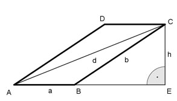

Flächenberechnungen Aufgabe 73 Ein Parallelogramm hat eine Fläche von 12 cm², eine Seite von 4 cm und eine von 8 cm. Wie groß sind die Höhe und die längere Diagonale?  A = a * h 12 = 4 * h | :4 h = 3 cm Satz von Pythagoras im Dreieck BEC: b² = h² + BE² | -h² BE² = b² - h² BE² = 8² - 3² BE² = 64 - 9 BE² = 55 |√ BE = 7,4 cm Satz von Pythagoras im Dreieck AEC: d² = h² + (a + BE)² d² = 3² + 11,4² d² = 9 + 130 d² = 139 |√ d = 11,8 cm